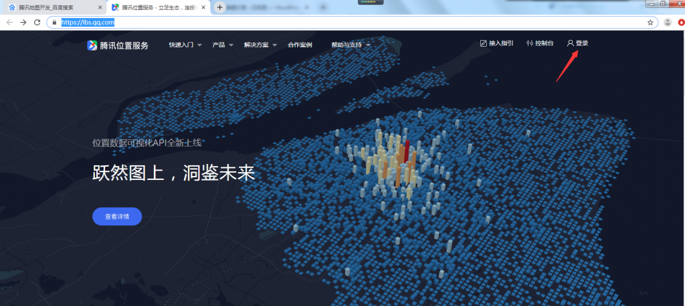
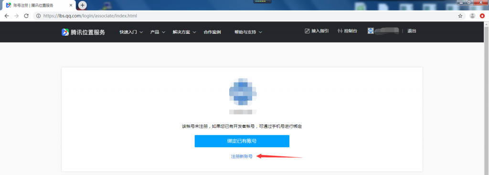
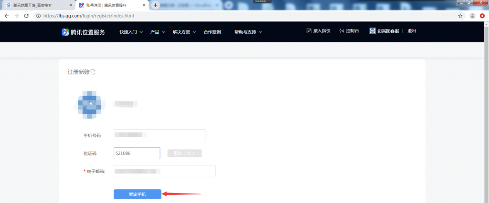
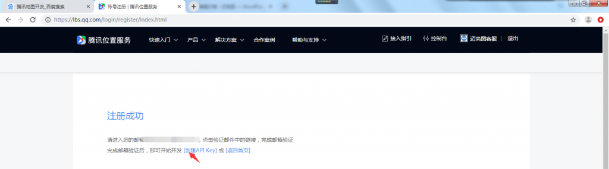
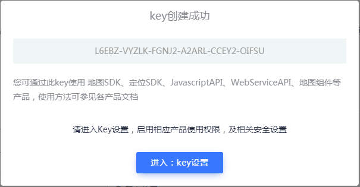
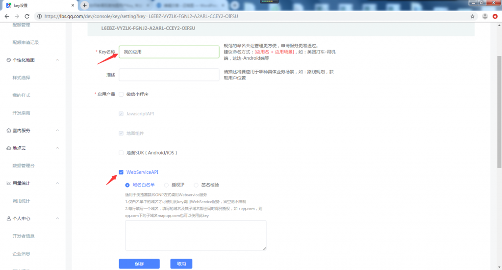
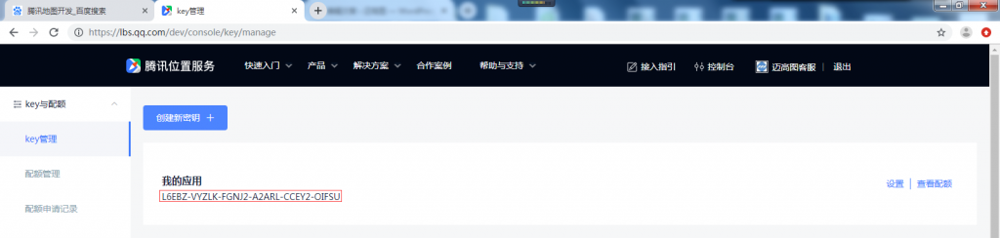

打开网页https://lbs.qq.com/，进入腾讯位置服务。

单击【登录】，登录腾讯账号（本文以QQ登录为例），如果首次登陆腾讯位置服务，则提示注册开发者账号。

选择箭头处【注册新账号】。填写手机号码并获取验证码和邮箱后，单击【绑定手机】。
注册提交成功后，自动跳转到如下页面，单击【创建API Key】。
稍等片刻后，提示key创建成功。单击【进入：key设置】，设置用户Key。

设置Key名称、【应用产品】设置为WebServiceAPI，其他保存默认设置，单击【保存】。

跳转到控制台【key管理】，下图方框中即为腾讯地图用户Key字符串。

记录并保存好用户Key字符串。至此，腾讯地图用户Key申请完成。
注意：个人开发者最多可创建5个用户Key。